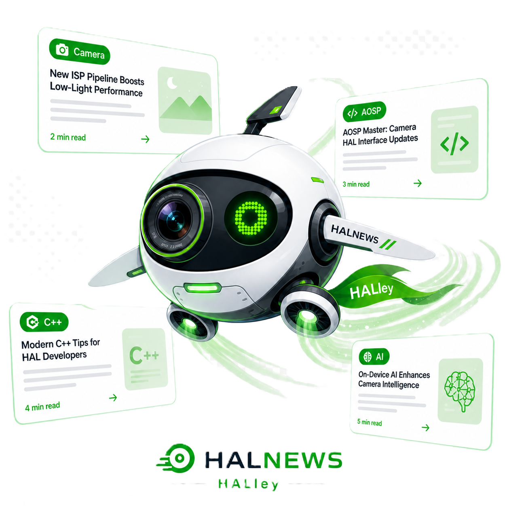

Camera SWNewsletter - 2026-05-29
이번 주 뉴스레터에서는 Google I/O 2026에서 발표된 Jetpack Compose 기반의 적응형 레이아웃 및 CameraX 통합 업데이트와 Google AI Studio를 활용한 네이티브 Android 앱 빌드 워크플로를 다룹니다. 다양한 폼 팩터에서의 카메라 미리보기 호환성 검증과 온디바이스 AI 카메라 데이터 처리 흐름을 최적화하기 위한 실무 가이드를 제공합니다.

이번 주 3줄 브리핑
- Google I/O 2026에서 Jetpack Compose와 CameraX의 통합이 강조되어, 폴더블 및 태블릿 등 다양한 화면 크기에서 올바른 카메라 미리보기(Preview) 스트림 호환성을 보장합니다.
- Google AI Studio를 통해 프롬프트 기반으로 네이티브 Android 앱을 신속하게 빌드할 수 있는 워크플로가 도입되어 온디바이스 AI 모델과 카메라 스트림 연동 프로토타이핑이 간소화됩니다.
- 개발 팀은 다양한 창 크기 전환 시 CameraX 미리보기의 버퍼 라이프사이클과 스트림 재구성(Stream Configuration) 동작을 검증하고, AI 입력 경로에서의 메모리 대역폭을 점검해야 합니다.
.png)
Google I/O 2026: Jetpack Compose와 CameraX로 구현하는 완벽한 적응형 카메라 미리보기
Jetpack Compose를 통한 멀티 디바이스 환경에서의 원활한 Android 경험 구축
Google I/O 2026에서 Android 생태계가 '기본 적응형(Adaptive by Default)'으로 전환됨에 따라, 다양한 폼 팩터에서 일관된 카메라 경험을 제공하는 것이 핵심 과제로 떠올랐습니다. 특히 Jetpack Compose와 CameraX의 긴밀한 통합은 폴더블, 태블릿, XR 기기 등 모든 화면 크기에서 왜곡 없는 카메라 미리보기를 구현하는 핵심 엔진 역할을 수행합니다.
현재 Android 생태계는 스마트폰을 넘어 폴더블폰, 태블릿, 차량용 디스플레이, XR 기기 등으로 빠르게 확장되고 있으며, 대화면 기기 사용자는 5억 8천만 명을 넘어섰습니다. 이러한 멀티 디바이스 환경에 대응하기 위해 Google은 Jetpack Compose를 중심으로 한 적응형 레이아웃 전환을 가속화하고 있습니다.
이번 발표에서 Jetpack Compose는 최신 Jetpack Navigation 3 릴리스, 실험적인 Grid 및 FlexBox 레이아웃, 그리고 향상된 비터치 입력 지원을 도입했습니다. 이와 함께 가장 주목받는 부분은 모든 창 크기와 화면 방향 전환 시에도 올바른 카메라 미리보기를 유지할 수 있도록 돕는 CameraX 라이브러리와의 통합입니다.
카메라 앱 개발자는 이제 기기가 접히거나 화면 크기가 동적으로 변하는 환경에서도 복잡한 Surface 회전 및 비율 계산 없이 CameraX를 통해 안정적인 미리보기 스트림을 구성할 수 있습니다. 이는 상위 프레임워크 수준에서 카메라 뷰포트와 그래픽 버퍼의 정렬을 자동으로 관리해 주기 때문입니다.
본 업데이트는 상위 App 및 Jetpack 프레임워크 계층의 변경 사항으로, Camera HAL의 직접적인 인터페이스 규격 변경을 수반하지는 않습니다. 그러나 폴더블 및 멀티 윈도우 환경에서 사용자가 화면 크기를 동적으로 변경할 때, 상위 프레임워크가 Camera HAL에 새로운 스트림 구성(Stream Configuration)을 빈번하게 요청하거나 Surface 버퍼를 재할당할 수 있습니다. HAL 개발자는 이러한 동적 스트림 재구성 시 발생할 수 있는 프레임 드롭(Frame Drop)이나 버퍼 교착 상태(Deadlock)를 방지하기 위해, 스트림 구성 및 버퍼 라이프사이클 처리 로직의 견고성을 검증해야 합니다.

Google AI Studio: 프롬프트만으로 네이티브 Android 앱 빌드 및 AI 카메라 프로토타이핑 가속화
Google AI Studio를 활용한 무설치 기반의 신속한 Android 개발 워크플로 도입
개발자가 로컬 소프트웨어를 설치하거나 복잡한 라이브러리를 구성할 필요 없이, 프롬프트 입력만으로 몇 분 만에 전체 Android 앱을 빌드할 수 있는 새로운 시대가 열렸습니다. Google AI Studio의 이번 업데이트는 온디바이스 AI 모델과 카메라 스트림을 연동하는 네이티브 앱의 초기 프로토타이핑 속도를 획기적으로 단축시킬 것입니다.
기존의 Android 네이티브 앱 개발은 Android Studio 설치, SDK 및 NDK 구성, Gradle 빌드 시스템 설정 등 초기 환경 구축에 상당한 시간과 자원이 소요되었습니다. 특히 AI 모델을 카메라 스트림과 연동하는 작업은 라이브러리 의존성 문제로 인해 진입 장벽이 높았습니다.
Google AI Studio의 새로운 기능을 활용하면, 개발자는 웹 브라우저 상에서 프롬프트를 입력하는 것만으로 동작 가능한 Android 앱 패키지를 즉시 생성할 수 있습니다. 이는 복잡한 빌드 파이프라인을 거치지 않고도 아이디어를 빠르게 검증할 수 있는 환경을 제공합니다.
카메라 엔지니어와 AI 연구원들은 이 도구를 활용하여 카메라로 캡처한 이미지나 실시간 미리보기 스트림을 AI 모델의 입력 데이터로 사용하는 시나리오를 신속하게 구현하고, 온디바이스 추론 성능 및 사용자 경험을 조기에 평가할 수 있습니다.
본 도구는 상위 애플리케이션 개발 및 프로토타이핑 워크플로 개선에 초점이 맞춰져 있으며, Camera HAL이나 커널 드라이버의 런타임 동작에 직접적인 영향을 주지는 않습니다. 다만, AI Studio를 통해 생성된 앱이 카메라 스트림 데이터를 AI 모델의 입력으로 빈번하게 전달할 때, NPU/GPU 자원 경합이나 메모리 대역폭(Memory Bandwidth) 부족으로 인한 카메라 프레임 드롭이 발생할 수 있습니다. 엔지니어는 이러한 프로토타입 앱 검증 시, 시스템 리소스 모니터링을 통해 카메라 파이프라인의 안정성을 함께 점검해야 합니다.